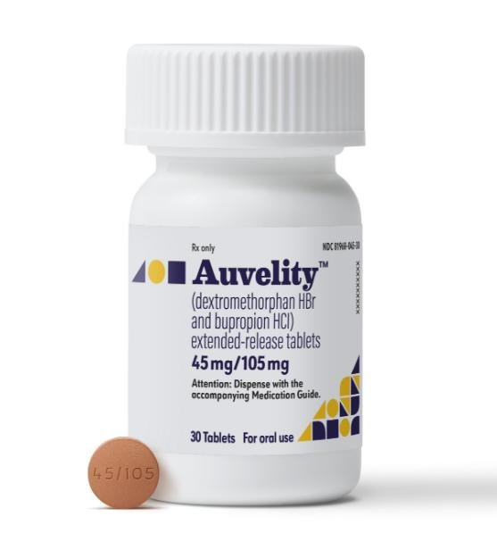

axs-05 [H]
-
12.3
- anhedonia
- anxiety auvelity
- Auveliti at nutshell
- auvelity anhedonia
- AUVELITY cost
- auvelity
- AXS-05 alzheimer
- axs-05 during 1y
- axs-05 long term results
- aaxs-05 MOA
- axs-05
- badanie kliniczne grupy etniczne
- cały artykół z badań klinicznych, jeszcze raz to samo ale dokładniej
- CGI-I
- DXM bez i z bupropionem
- XM emotional
- DXM in pain
- flashcard
- Kolejne badanie kliniczne, demografia
- kolejne badanie kliniczne, to samo znowu ale inaczej, całkiem dokładne
- MADRS v2
- MADRS
- patient brochure
- PGI-I.png
- Plateau
- QIDS-SR-16
- Q-LES-SF
- Remisja
- SDS
- to samo ale przez kogo innego, 1y axs-05
- ulotka
- main information  >